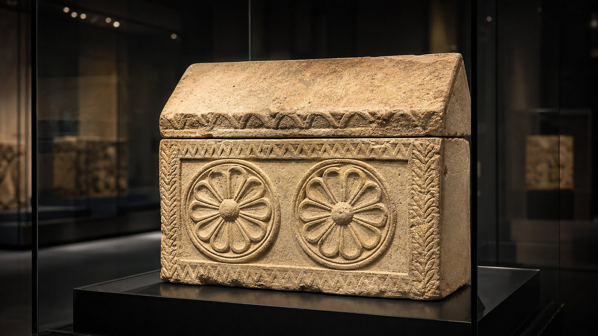
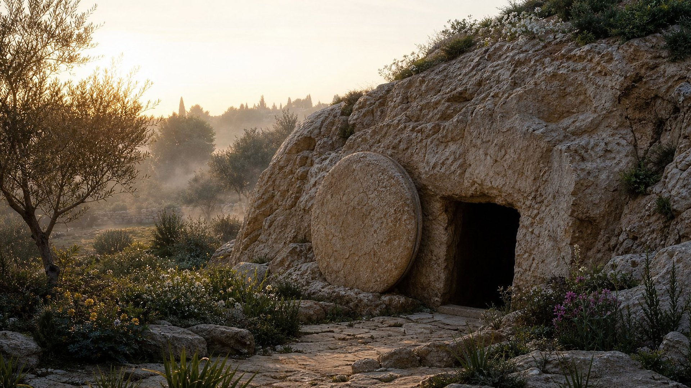

Du XVIe au ve siècle av. n. è. · Statut : ACCOMPLIE
Un portrait tracé à l’avance
Pendant plus de mille ans, des auteurs très différents (un législateur, un roi poète, des prophètes de cour et de campagne) ont décrit un même personnage à venir : le Messie, c’est-à-dire « l’Oint ». Aucun d’eux n’en trace le portrait complet. Chacun en ajoute un trait : sa tribu, sa ville natale, sa manière d’entrer à Jérusalem, le prix de sa trahison, sa mort et sa sépulture.
Au ier siècle, les rédacteurs des Évangiles reprennent ces textes un à un et les appliquent à Jésus de Nazareth. Ce musée confronte les deux séries de textes : ce qui a été écrit avant, et ce qui a été raconté après.
Les manuscrits de la mer Morte garantissent l’antériorité : le Grand rouleau d’Isaïe, copié au iie siècle avant notre ère, contient déjà le chapitre 53 tout entier (PR-007).
Reconstitution numériqueBethléhem, « petite entre les milliers de Juda ».
(Et toi, Bethléhem Éphrata, bien que tu sois petite entre les milliers de Juda, de toi sortira pour moi celui qui doit dominer en Israël, et duquel les origines ont été d’ancienneté, dès les jours d’éternité.)
35 traits du Messie, annoncés dans les Écritures hébraïques et retrouvés dans les récits du ier siècle. Choisissez une empreinte pour lire l’annonce et son accomplissement côte à côte ; filtrez par période de la vie de Jésus.
0 / 35 empreintes consultées
01 · Naissance
De la tribu de Juda
Annoncé · Moïse · vers 1513 av. n. è.
« Le sceptre ne se retirera point de Juda, ni un législateur d’entre ses pieds, jusqu’à ce que Shilo vienne ; et à lui sera l’obéissance des peuples. »
Accompli · ier siècle
« … d’Aminadab, d’Aram, d’Esrom, de Pharès, de Juda … »
Le « sceptre » reste à Juda jusqu’à la venue de celui à qui il appartient ; la généalogie de Jésus remonte à Juda.
Niveau de preuve : LECTURE PROPHÉTIQUE
02 · Naissance
Héritier du trône de David
Annoncé · Isaïe · viiie s. av. n. è.
« À l’accroissement de [son] empire, et à la paix, il n’y aura pas de fin, sur le trône de David et dans son royaume, pour l’établir et le soutenir en jugement et en justice, dès maintenant et à toujours. La jalousie de Jéhovah des armées fera cela. »
Accompli · ier siècle
« Livre de la généalogie de Jésus Christ, fils de David, fils d’Abraham … »
Le règne sans fin est promis « sur le trône de David » ; Matthieu ouvre son récit par la lignée de Jésus, « fils de David ».
Niveau de preuve : LECTURE PROPHÉTIQUE
03 · Naissance
Né d’une vierge
Annoncé · Isaïe · viiie s. av. n. è.
« C’est pourquoi le Seigneur, lui, vous donnera un signe: Voici, la vierge concevra et elle enfantera un fils, et appellera son nom Emmanuel. »
Accompli · ier siècle
« Et Marie dit à l’ange: Comment ceci arrivera-t-il, puisque je ne connais pas d’homme ? »
Marie est vierge lorsqu’on lui annonce la naissance de Jésus ; Matthieu y voit l’accomplissement d’Isaïe 7:14.
Niveau de preuve : LECTURE PROPHÉTIQUE
04 · Naissance
Né à Bethléhem
Annoncé · Michée · avant 717 av. n. è.
« (Et toi, Bethléhem Éphrata, bien que tu sois petite entre les milliers de Juda, de toi sortira pour moi celui qui doit dominer en Israël, et duquel les origines ont été d’ancienneté, dès les jours d’éternité.) »
Accompli · ier siècle
« Or, après que Jésus fut né à Bethléhem de Judée, aux jours du roi Hérode, voici, des mages de l’orient arrivèrent à Jérusalem … »
Une localité « petite entre les milliers de Juda » devient le lieu de naissance du Messie.
Niveau de preuve : LECTURE PROPHÉTIQUE
05 · Naissance
Rachel pleure ses enfants
Annoncé · Jérémie · achevé vers 580 av. n. è.
« Ainsi dit Jéhovah: Une voix a été entendue à Rama, une lamentation, des pleurs amers, Rachel pleurant ses fils, refusant d’être consolée au sujet de ses fils, parce qu’ils ne sont pas. »
Accompli · ier siècle
« Alors Hérode, voyant que les mages s’étaient joués de lui, fut fort en colère ; et il envoya, et fit tuer tous les enfants qui étaient dans Bethléhem et dans tout son territoire, depuis l’âge de deux ans et au-dessous, selon le temps dont il s’était enquis exactement auprès des mages. Alors fut accompli ce qui a été dit par Jérémie le prophète, disant: « Une voix a été entendue à Rama, [des lamentations, et] des pleurs, et de grands gémissements, Rachel pleurant ses enfants ; et elle n’a pas voulu être consolée, parce qu’ils ne sont pas ». »
Hérode fait tuer les enfants de Bethléhem ; Matthieu y applique la lamentation de Rachel.
Niveau de preuve : LECTURE PROPHÉTIQUE
06 · Naissance
Appelé d’Égypte
Annoncé · Osée · viiie s. av. n. è.
« Quand Israël était jeune, je l’ai aimé, et j’ai appelé mon fils hors d’Égypte. »
Accompli · ier siècle
« Et lui, s’étant levé, prit de nuit le petit enfant et sa mère, et se retira en Égypte. »
Joseph s’enfuit en Égypte avec l’enfant et y reste jusqu’à la mort d’Hérode ; Matthieu cite Osée.
Niveau de preuve : LECTURE PROPHÉTIQUE
07 · Ministère
Précédé d’un messager
Annoncé · Malachie · après 443 av. n. è.
« Voici, j’envoie mon messager, et il préparera le chemin devant moi ; et le Seigneur que vous cherchez viendra soudain à son temple, et l’Ange de l’alliance en qui vous prenez plaisir, – voici, il vient, dit Jéhovah des armées. »
Accompli · ier siècle
« … car c’est ici celui dont il est écrit: « Voici, moi j’envoie mon messager devant ta face, lequel préparera ton chemin devant toi ». »
Jésus identifie Jean le Baptiseur au messager qui devait préparer le chemin.
Niveau de preuve : LECTURE PROPHÉTIQUE
08 · Ministère
Reconnu comme Fils de Dieu
Annoncé · David · xie s. av. n. è.
« Je raconterai le décret: Jéhovah m’a dit: Tu es mon Fils ; aujourd’hui, je t’ai engendré. »
Accompli · ier siècle
« Et voici une voix qui venait des cieux, disant: Celui-ci est mon Fils bien-aimé, en qui j’ai trouvé mon plaisir. »
À son baptême, une voix venant du ciel le déclare « mon Fils bien-aimé ».
Niveau de preuve : LECTURE PROPHÉTIQUE
09 · Ministère
Le Messie paraît au temps fixé
Annoncé · Daniel · vers 536 av. n. è.
« Et sache, et comprends: Depuis la sortie de la parole pour rétablir et rebâtir Jérusalem, jusqu’au Messie, [le] prince, il y a 7 semaines et 62 semaines ; la place et le fossé seront rebâtis, et [cela] en des temps de trouble. »
Accompli · ier siècle
« Et Jésus lui-même commençait d’avoir environ 30 ans, étant, comme on l’estimait, fils de Joseph: d’Héli … »
Les 69 « semaines » d’années mènent à l’an 29, quand Jésus, âgé d’environ 30 ans, est baptisé (salle 10).
Niveau de preuve : LECTURE PROPHÉTIQUE
10 · Ministère
Une lumière en Galilée
Annoncé · Isaïe · viiie s. av. n. è.
« … le peuple qui marchait dans les ténèbres a vu une grande lumière ; ceux qui habitaient dans le pays de l’ombre de la mort,… la lumière a resplendi sur eux ! »
Accompli · ier siècle
« … et ayant quitté Nazareth, il alla demeurer à Capernaüm, qui est au bord de la mer, sur les confins de Zabulon et de Nephthali, afin que fût accompli ce qui avait été dit par Ésaïe le prophète, disant: « Terre de Zabulon, et terre de Nephthali, chemin de la mer au-delà du Jourdain, Galilée des nations: le peuple assis dans les ténèbres a vu une grande lumière ; et sur ceux qui sont assis dans la région et dans l’ombre de la mort, la lumière s’est levée ». »
Jésus s’installe à Capharnaüm, aux confins de Zabulon et de Nephthali, et commence à y prêcher.
Niveau de preuve : LECTURE PROPHÉTIQUE
11 · Ministère
Il porte nos maladies
Annoncé · Isaïe · viiie s. av. n. è.
« Certainement, lui, a porté nos langueurs, et s’est chargé de nos douleurs ; et nous, nous l’avons estimé battu, frappé de Dieu, et affligé … »
Accompli · ier siècle
« Et le soir étant venu, on lui apporta beaucoup de démoniaques ; et il chassa les esprits par [une] parole, et guérit tous ceux qui se portaient mal ; en sorte que fût accompli ce qui a été dit par Ésaïe le prophète, disant: « Lui-même a pris nos langueurs, et a porté nos maladies ». »
Les guérisons accomplies par Jésus sont rapprochées par Matthieu de ce passage d’Isaïe.
Niveau de preuve : LECTURE PROPHÉTIQUE
12 · Ministère
Il enseigne en paraboles
Annoncé · Asaph · Xe-xie s. av. n. è.
« J’ouvrirai ma bouche en paraboles, j’annoncerai les énigmes [des jours] d’autrefois … »
Accompli · ier siècle
« Jésus dit toutes ces choses aux foules en paraboles, et sans parabole il ne leur disait rien ; en sorte que fût accompli ce qui a été dit par le prophète, disant: « J’ouvrirai ma bouche en paraboles, je proférerai des choses qui ont été cachées dès la fondation du monde ». »
Jésus enseigne les foules par des paraboles, « et sans parabole il ne leur disait rien ».
Niveau de preuve : LECTURE PROPHÉTIQUE
13 · Ministère
Le zèle pour la maison de Dieu
Annoncé · David · xie s. av. n. è.
« Car le zèle de ta maison m’a dévoré, et les outrages de ceux qui t’outragent sont tombés sur moi. »
Accompli · ier siècle
« [Et] ses disciples se souvinrent qu’il est écrit: « Le zèle de ta maison me dévore ». »
Quand Jésus chasse les marchands du temple, ses disciples se souviennent de ce psaume.
Niveau de preuve : LECTURE PROPHÉTIQUE
14 · Ministère
Il ne brise pas le roseau froissé
Annoncé · Isaïe · viiie s. av. n. è.
« Il ne criera pas, et il n’élèvera pas sa voix, et il ne la fera pas entendre dans la rue. Il ne brisera pas le roseau froissé, et n’éteindra pas le lin qui brûle à peine. Il fera valoir le jugement en faveur de la vérité. »
Accompli · ier siècle
« Il ne contestera pas, et ne criera pas, et personne n’entendra sa voix dans les rues ; il ne brisera pas le roseau froissé, et il n’éteindra pas le lumignon qui fume, jusqu’à ce qu’il ait produit en victoire le jugement … »
Douceur envers les faibles, refus de la propagande : Matthieu applique ce portrait du « serviteur » à Jésus.
Niveau de preuve : LECTURE PROPHÉTIQUE
15 · Ministère
Beaucoup ne croient pas
Annoncé · Isaïe · viiie s. av. n. è.
« Qui a cru à ce que nous avons fait entendre, et à qui le bras de Jéhovah a-t-il été révélé ? »
Accompli · ier siècle
« Et quoiqu’il ait fait tant de miracles devant eux, ils ne crurent pas en lui … »
Malgré ses miracles, une grande partie du peuple refuse de croire en lui, comme Isaïe l’avait annoncé.
Niveau de preuve : LECTURE PROPHÉTIQUE
16 · Ministère
La pierre rejetée
Annoncé · Psaumes · recueil achevé vers 460 av. n. è.
« La pierre que ceux qui bâtissaient avaient rejetée, est devenue la tête de l’angle. »
Accompli · ier siècle
« Celui-ci est la pierre méprisée par vous qui bâtissez, qui est devenue la pierre angulaire … »
Rejeté par les chefs religieux, Jésus devient la « pierre angulaire ».
Niveau de preuve : LECTURE PROPHÉTIQUE
17 · Dernière semaine
Le roi monté sur un ânon
Annoncé · Zacharie · 518 av. n. è.
« Réjouis-toi avec transports, fille de Sion ; pousse des cris de joie, fille de Jérusalem ! Voici, ton roi vient à toi ; il est juste et ayant le salut, humble et monté sur un âne, et sur un poulain, le petit d’une ânesse. »
Accompli · ier siècle
« Et tout cela arriva, afin que fût accompli ce qui avait été dit par le prophète, disant: « Dites à la fille de Sion: Voici, ton roi vient à toi, débonnaire et monté sur une ânesse et sur un ânon, le petit d’une ânesse ». »
Jésus entre à Jérusalem sur un ânon, acclamé par la foule.
Niveau de preuve : LECTURE PROPHÉTIQUE
18 · Dernière semaine
La louange des enfants
Annoncé · David · xie s. av. n. è.
« Par la bouche des petits enfants et de ceux qui tètent, tu as fondé [ta] force, à cause de tes adversaires, afin de réduire au silence l’ennemi et le vengeur. »
Accompli · ier siècle
« Et les principaux sacrificateurs et les scribes, voyant les merveilles qu’il faisait, et les enfants criant dans le temple et disant: Hosanna au fils de David ! en furent indignés, et lui dirent: Entends-tu ce que ceux-ci disent ? Mais Jésus leur dit: Sans doute ; n’avez-vous jamais lu: « Par la bouche des petits enfants et de ceux qui tètent, tu as établi ta louange »? »
Des enfants l’acclament dans le temple ; Jésus cite lui-même le psaume aux prêtres indignés.
Niveau de preuve : LECTURE PROPHÉTIQUE
19 · Dernière semaine
Trahi par un ami
Annoncé · David · xie s. av. n. è.
« Mon intime ami aussi, en qui je me confiais, qui mangeait mon pain, a levé le talon contre moi. »
Accompli · ier siècle
« Je ne parle pas de vous tous ; moi, je connais ceux que j’ai choisis ; mais c’est afin que l’écriture soit accomplie: « Celui qui mange le pain avec moi a levé son talon contre moi ». »
Judas, qui partage son repas, le trahit ; Jésus applique ce verset à la situation.
Niveau de preuve : LECTURE PROPHÉTIQUE
20 · Dernière semaine
Trente pièces d’argent
Annoncé · Zacharie · 518 av. n. è.
« Et je leur dis: Si cela est bon à vos yeux, donnez-[moi] mon salaire: sinon, laissez-le. Et ils pesèrent mon salaire, 30 [pièces] d’argent. »
Accompli · ier siècle
« … et dit: Que voulez-vous me donner, et moi, je vous le livrerai ? Et ils lui comptèrent 30 pièces d’argent. »
C’est le prix que les prêtres versent à Judas.
Niveau de preuve : LECTURE PROPHÉTIQUE
21 · Dernière semaine
L’argent jeté, le champ du potier
Annoncé · Zacharie · 518 av. n. è.
« Et Jéhovah me dit: Jette-le au potier, [ce] prix magnifique auquel j’ai été estimé par eux. Et je pris les 30 [pièces] d’argent, et je les jetai au potier, dans la maison de Jéhovah. »
Accompli · ier siècle
« Et ayant jeté l’argent dans le temple, il se retira ; et s’en étant allé, il se pendit. Mais les principaux sacrificateurs, ayant pris les pièces d’argent, dirent: Il n’est pas permis de les mettre dans le trésor sacré, puisque c’est le prix du sang. Et ayant tenu conseil, ils achetèrent avec cet [argent] le champ du potier, pour la sépulture des étrangers … »
Judas jette l’argent dans le temple ; les prêtres achètent avec cette somme le « champ du potier ».
Niveau de preuve : LECTURE PROPHÉTIQUE
22 · Dernière semaine
Le berger frappé, les brebis dispersées
Annoncé · Zacharie · 518 av. n. è.
« Épée, réveille-toi contre mon berger, contre l’homme [qui est] mon compagnon, dit Jéhovah des armées ; frappe le berger, et le troupeau sera dispersé ; et je tournerai ma main sur les petits. »
Accompli · ier siècle
« Alors Jésus leur dit: Vous serez tous scandalisés en moi cette nuit ; car il est écrit: « Je frapperai le berger, et les brebis du troupeau seront dispersées » … »
Lors de l’arrestation, tous les disciples s’enfuient.
Niveau de preuve : LECTURE PROPHÉTIQUE
23 · Dernière semaine
Frappé et couvert de crachats
Annoncé · Isaïe · viiie s. av. n. è.
« J’ai donné mon dos à ceux qui frappaient, et mes joues à ceux qui arrachaient le poil ; je n’ai pas caché ma face à l’opprobre et aux crachats. »
Accompli · ier siècle
« Alors ils lui crachèrent au visage et lui donnèrent des soufflets ; et quelques-uns le frappèrent … »
Devant le sanhédrin, on lui crache au visage et on le frappe.
Niveau de preuve : LECTURE PROPHÉTIQUE
24 · Dernière semaine
Muet devant ses accusateurs
Annoncé · Isaïe · viiie s. av. n. è.
« Il a été opprimé et affligé, et il n’a pas ouvert sa bouche. Il a été amené comme un agneau à la boucherie, et a été comme une brebis muette devant ceux qui la tondent ; et il n’a pas ouvert sa bouche. »
Accompli · ier siècle
« Et étant accusé par les principaux sacrificateurs et les anciens, il ne répondit rien. Alors Pilate lui dit: N’entends-tu pas de combien de choses ils portent témoignage contre toi ? Et il ne lui répondit pas même un seul mot ; en sorte que le gouverneur s’en étonnait fort. »
Devant Pilate, Jésus ne répond rien aux accusations, au grand étonnement du gouverneur.
Niveau de preuve : LECTURE PROPHÉTIQUE
25 · Mort
Compté parmi les malfaiteurs
Annoncé · Isaïe · viiie s. av. n. è.
« C’est pourquoi je lui assignerai une part avec les grands, et il partagera le butin avec les forts, parce qu’il aura livré son âme à la mort, et qu’il aura été compté parmi les transgresseurs, et qu’il a porté le péché de plusieurs, et qu’il a intercédé pour les transgresseurs. »
Accompli · ier siècle
« Car je vous dis, qu’il faut encore que ceci qui est écrit, soit accompli en moi: « Et il a été compté parmi les iniques ». Car aussi les choses qui me concernent vont avoir leur fin. »
Jésus annonce lui-même que ce verset va s’accomplir en lui ; il est exécuté entre deux malfaiteurs.
Niveau de preuve : LECTURE PROPHÉTIQUE
26 · Mort
Moqué : « qu’il le délivre ! »
Annoncé · David · xie s. av. n. è.
« Tous ceux qui me voient se moquent de moi ; ils ouvrent la bouche, ils hochent la tête: Il se confie à Jéhovah: qu’il le fasse échapper, qu’il le délivre, car il prend son plaisir en lui ! »
Accompli · ier siècle
« Il s’est confié en Dieu ; qu’il le délivre maintenant, s’il tient à lui ; car il a dit: Je suis Fils de Dieu. »
Les chefs religieux reprennent presque mot pour mot les railleries du psaume.
Niveau de preuve : LECTURE PROPHÉTIQUE
27 · Mort
Ses vêtements tirés au sort
Annoncé · David · xie s. av. n. è.
« Ils partagent entre eux mes vêtements, et sur ma robe ils jettent le sort. »
Accompli · ier siècle
« Ils dirent donc entre eux: Ne la déchirons pas, mais jetons-la au sort, à qui elle sera, – afin que l’écriture fût accomplie, qui dit: « Ils ont partagé entre eux mes vêtements, et ils ont jeté le sort sur ma robe ». Les soldats donc firent ces choses. »
Les soldats se partagent ses vêtements et tirent sa tunique au sort.
Niveau de preuve : LECTURE PROPHÉTIQUE
28 · Mort
Du vinaigre pour sa soif
Annoncé · David · xie s. av. n. è.
« Ils ont mis du fiel dans ma nourriture, et, dans ma soif, ils m’ont abreuvé de vinaigre. »
Accompli · ier siècle
« Et aussitôt l’un d’entre eux courut et prit une éponge, et l’ayant remplie de vinaigre, la mit au bout d’un roseau, et lui donna à boire. »
On lui tend une éponge imbibée de vinaigre.
Niveau de preuve : LECTURE PROPHÉTIQUE
29 · Mort
« Pourquoi m’as-tu abandonné ? »
Annoncé · David · xie s. av. n. è.
« Mon Dieu ! mon Dieu ! pourquoi m’as-tu abandonné, [te tenant] loin de mon salut, – des paroles de mon rugissement ? »
Accompli · ier siècle
« Et vers la neuvième heure, Jésus s’écria d’une forte voix, disant: Éli, Éli, lama sabachthani ? c’est-à-dire: Mon Dieu, mon Dieu, pourquoi m’as-tu abandonné ? »
Jésus crie les premiers mots de ce psaume.
Niveau de preuve : LECTURE PROPHÉTIQUE
30 · Mort
Pas un os brisé
Annoncé · David · xie s. av. n. è.
« Il garde tous ses os, pas un d’eux n’est cassé. »
Accompli · ier siècle
« Car ces choses sont arrivées afin que l’écriture fût accomplie: « Pas un de ses os ne sera cassé ». »
On ne lui brise pas les jambes, parce qu’il est déjà mort.
Niveau de preuve : LECTURE PROPHÉTIQUE
31 · Mort
Celui qu’ils ont percé
Annoncé · Zacharie · 518 av. n. è.
« Et je répandrai sur la maison de David et sur les habitants de Jérusalem un esprit de grâce et de supplications ; et ils regarderont vers moi, celui qu’ils auront percé, et ils se lamenteront sur lui, comme on se lamente sur un [fils] unique, et il y aura de l’amertume pour lui, comme on a de l’amertume pour un premier-né. »
Accompli · ier siècle
« … mais l’un des soldats lui perça le côté avec une lance ; et aussitôt il en sortit du sang et de l’eau. »
Un soldat lui perce le côté avec une lance ; Jean cite Zacharie (Jean 19:37).
Niveau de preuve : LECTURE PROPHÉTIQUE
32 · Mort
Une mort pour les fautes des autres
Annoncé · Isaïe · viiie s. av. n. è.
« … mais il a été blessé pour nos transgressions, il a été meurtri pour nos iniquités ; le châtiment de notre paix a été sur lui, et par ses meurtrissures nous sommes guéris. »
Accompli · ier siècle
« … de même que le fils de l’homme n’est pas venu pour être servi, mais pour servir et pour donner sa vie en rançon pour plusieurs. »
Jésus dit être venu « donner sa vie en rançon pour plusieurs ».
Niveau de preuve : LECTURE PROPHÉTIQUE
33 · Mort
Mis au tombeau avec le riche
Annoncé · Isaïe · viiie s. av. n. è.
« Et on lui donna son sépulcre avec les méchants ; mais il a été avec le riche dans sa mort, parce qu’il n’avait fait aucune violence, et qu’il n’y avait pas de fraude dans sa bouche. »
Accompli · ier siècle
« Et, le soir étant venu, il arriva un homme riche d’Arimathée, dont le nom était Joseph, qui aussi lui-même était disciple de Jésus. Celui-ci étant allé auprès de Pilate, demanda le corps de Jésus ; alors Pilate donna l’ordre que le corps soit livré. Et Joseph, ayant pris le corps, l’enveloppa d’un linceul net, et le mit dans son sépulcre neuf qu’il avait taillé dans le roc ; et ayant roulé une grande pierre contre la porte du sépulcre, il s’en alla. »
Joseph d’Arimathée, un homme riche, le dépose dans son tombeau neuf.
Niveau de preuve : LECTURE PROPHÉTIQUE
34 · Après la mort
Il ne voit pas la corruption
Annoncé · David · xie s. av. n. è.
« Car tu n’abandonneras pas mon âme au shéol, tu ne permettras pas que ton saint voie la corruption. »
Accompli · ier siècle
« … il a dit de la résurrection du Christ, en la prévoyant, qu’il n’a pas été laissé dans le hadès, et que sa chair non plus n’a pas vu la corruption. Ce Jésus, Dieu l’a ressuscité, ce dont nous, nous sommes tous témoins. »
Pierre annonce que Dieu a ressuscité Jésus, dont le corps n’a pas connu la décomposition.
Niveau de preuve : LECTURE PROPHÉTIQUE
35 · Après la mort
Assis à la droite de Dieu
Annoncé · David · xie s. av. n. è.
« De David. Psaume. Jéhovah a dit à mon Seigneur: Assieds-toi à ma droite, jusqu’à ce que je mette tes ennemis pour le marchepied de tes pieds. »
Accompli · ier siècle
« … et il dit: Voici, je vois les cieux ouverts, et le Fils de l’homme debout à la droite de Dieu. »
Étienne voit Jésus « debout à la droite de Dieu ».
Niveau de preuve : LECTURE PROPHÉTIQUE
Citations : Darby 1885, tétragramme rendu « Jéhovah ». Les rapprochements sont ceux que font les rédacteurs du ier siècle eux-mêmes, ou que le musée retient à leur suite : ce sont des lectures prophétiques.
Vérification
Ce que personne ne pouvait arranger
Reconstitution numériqueTrente pièces d’argent : le prix fixé par les prêtres.
Un imposteur aurait pu, à la rigueur, entrer à Jérusalem sur un ânon ou citer les bons psaumes. Mais beaucoup de traits du portrait échappaient à toute mise en scène : la tribu et la ville de naissance, le prix convenu entre Judas et les prêtres, le geste de soldats romains qui jouent une tunique aux dés, ou qui renoncent à briser des jambes, la générosité d’un riche notable qui offre son tombeau.
Les sept détails ci-dessous sont confrontés aux récits du ier siècle. Le dernier, le cadre de l’exécution, est confirmé par des sources indépendantes des Évangiles.
01Détail 1
Le futur chef d’Israël sortira de Bethléhem Éphrata, une petite localité de Juda.
« (Et toi, Bethléhem Éphrata, bien que tu sois petite entre les milliers de Juda, de toi sortira pour moi celui qui doit dominer en Israël, et duquel les origines ont été d’ancienneté, dès les jours d’éternité.) »
Ce que le musée en lit
Jésus naît à Bethléhem, en Judée, en l’an 2 avant notre ère. Ses parents habitaient Nazareth, en Galilée, à plus de 100 km de là ; c’est le recensement ordonné par Auguste qui les conduit à Bethléhem, la ville d’origine de la famille de Joseph.
Niveau de preuve : LECTURE PROPHÉTIQUEPreuves : PR-058
02Détail 2
Le roi vient à Jérusalem, humble, monté sur un ânon.
« Réjouis-toi avec transports, fille de Sion ; pousse des cris de joie, fille de Jérusalem ! Voici, ton roi vient à toi ; il est juste et ayant le salut, humble et monté sur un âne, et sur un poulain, le petit d’une ânesse. »
Ce que le musée en lit
Quelques jours avant sa mort, au printemps de 33, Jésus entre à Jérusalem monté sur un ânon. La foule l’acclame comme « fils de David » et étend ses vêtements sur le chemin.
Niveau de preuve : LECTURE PROPHÉTIQUE
03Détail 3
Le salaire du berger est fixé à trente pièces d’argent.
« Et je leur dis: Si cela est bon à vos yeux, donnez-[moi] mon salaire: sinon, laissez-le. Et ils pesèrent mon salaire, 30 [pièces] d’argent. »
Ce que le musée en lit
Les principaux prêtres paient trente pièces d’argent à Judas pour qu’il leur livre Jésus. Le montant n’a pas été choisi par les disciples ; il correspond au prix d’un esclave dans la Loi (Exode 21:32).
Niveau de preuve : LECTURE PROPHÉTIQUE
04Détail 4
Ses vêtements sont partagés et sa robe est tirée au sort.
« Ils partagent entre eux mes vêtements, et sur ma robe ils jettent le sort. »
Ce que le musée en lit
Au pied du poteau, les soldats romains se partagent les vêtements de Jésus. Ils tirent au sort sa tunique, tissée d’une seule pièce, pour ne pas la déchirer.
Niveau de preuve : LECTURE PROPHÉTIQUE
05Détail 5
Pas un de ses os n’est brisé.
« Il garde tous ses os, pas un d’eux n’est cassé. »
Ce que le musée en lit
Pour hâter la mort des condamnés avant le sabbat, les soldats leur brisent les jambes. Jésus est déjà mort : ils ne touchent pas à ses os, mais l’un d’eux lui perce le côté avec une lance.
Niveau de preuve : LECTURE PROPHÉTIQUE
06Détail 6
Il est mis au tombeau avec le riche.
« Et on lui donna son sépulcre avec les méchants ; mais il a été avec le riche dans sa mort, parce qu’il n’avait fait aucune violence, et qu’il n’y avait pas de fraude dans sa bouche. »
Ce que le musée en lit
Mort comme un condamné, Jésus aurait pu finir dans une fosse commune. Joseph d’Arimathée, un homme riche, obtient son corps de Pilate et le dépose dans son propre tombeau neuf, taillé dans le roc.
Niveau de preuve : LECTURE PROPHÉTIQUE
07Détail 7
Le condamné est « pendu au bois ».
« Et si un homme a commis un péché digne de mort, et qu’il ait été mis à mort, et que tu l’aies pendu à un bois … »
Ce qui s’est passé
Jésus est exécuté sous l’autorité de Ponce Pilate, gouverneur de Judée de 26 à 36, après avoir comparu devant le grand prêtre Caïphe. L’historien romain Tacite confirme qu’il a été mis à mort sous Tibère par Pilate, et une inscription ainsi qu’un ossuaire attestent les deux hommes. Les apôtres disent qu’il a été « pendu au bois » (Actes 5:30 ; Galates 3:13).
Niveau de preuve : FAIT ARCHÉOLOGIQUE Hors des Évangiles
Pilate, Caïphe et Tibère
Les personnages qui encadrent la mort de Jésus ne sont pas des figures de légende. En 1961, à Césarée, des archéologues ont dégagé une pierre remployée dans le théâtre romain : elle porte le nom de « Ponce Pilate, préfet de Judée » (PR-070).
En 1990, dans un tombeau familial au sud de Jérusalem, un ossuaire richement décoré portait par deux fois le nom de « Joseph fils de Caïphe ». C’est le grand prêtre devant lequel Jésus comparut (PR-071).
Vers 116, l’historien romain Tacite, peu suspect de sympathie envers les chrétiens, écrit que leur nom vient de « Christus », exécuté sous le règne de Tibère par le procurateur Ponce Pilate (PR-072).

Reconstitution numériqueÉvocation d’un ossuaire du ier siècle orné de rosaces, comme celui de « Joseph fils de Caïphe ».
Deutéronome 21:22 · Galates 3:13
« Pendu au bois »
La Loi de Moïse prévoyait qu’un condamné pouvait être exposé « sur un bois », et le déclarait « maudit ». Les apôtres reprennent cette expression pour parler de la mort de Jésus : Dieu a ressuscité Jésus, « que vous avez fait mourir, le pendant au bois ».
Le Dieu de nos pères a ressuscité Jésus que vous avez fait mourir, le pendant au bois.
Actes 5:30
Darby 1885
Isaïe 53:9 · Psaume 16:10
Un tombeau neuf, taillé dans le roc

Reconstitution numériqueUn tombeau du ier siècle fermé par une pierre roulante, comme celui de Joseph d’Arimathée.
Isaïe annonçait que le serviteur serait mis au tombeau « avec les méchants », mais aussi « avec le riche dans sa mort ». Jésus meurt entre deux malfaiteurs. Puis Joseph d’Arimathée, membre du sanhédrin, homme riche et disciple discret, obtient de Pilate le corps et le dépose dans son propre tombeau neuf, fermé par une grande pierre.
Le récit ne s’arrête pas là. Le psalmiste avait écrit : « tu ne permettras pas que ton saint voie la corruption ». Cinquante jours après la mort de Jésus, à Jérusalem même, Pierre annonce publiquement que Dieu l’a ressuscité et que ses disciples en sont témoins (Actes 2:31-32). C’est une lecture prophétique, et le cœur de la foi des premiers disciples.
Et, le soir étant venu, il arriva un homme riche d’Arimathée, dont le nom était Joseph, qui aussi lui-même était disciple de Jésus. Celui-ci étant allé auprès de Pilate, demanda le corps de Jésus ; alors Pilate donna l’ordre que le corps soit livré. Et Joseph, ayant pris le corps, l’enveloppa d’un linceul net, et le mit dans son sépulcre neuf qu’il avait taillé dans le roc ; et ayant roulé une grande pierre contre la porte du sépulcre, il s’en alla.
Matthieu 27:57-60
Darby 1885
Dossier
Pièces à conviction
Un manuscrit antérieur à Jésus, une inscription, un ossuaire et deux textes antiques.
Niveau de preuve : FAIT ARCHÉOLOGIQUEPR-007
Grand rouleau d’Isaïe (1QIsa a)
Nature
Manuscrit biblique (Qumrân, grotte 1)
Date
iie s. av. n. è. (paléographie et carbone 14)
Conservation
Musée d’Israël, Jérusalem (Sanctuaire du Livre)
Inventaire
HU 95.57/27
Les 66 chapitres d’Isaïe, y compris les passages qui nomment Cyrus (44:28 ; 45:1), sont attestés au moins deux siècles avant notre ère, quasi identiques au texte massorétique.
Mentionne « Ponce Pilate, préfet de Judée » et un édifice en l’honneur de Tibère. Découverte en 1961, remployée dans le théâtre de Césarée, c’est le seul objet de son époque qui porte le nom du gouverneur.
Le nom « Joseph fils de Caïphe » y est gravé deux fois. Caïphe fut grand prêtre de 18 à 36 ; c’est devant lui que Jésus comparut après son arrestation.
Évangile de Luc 2:1-3 ; Res Gestae Divi Augusti (recensements)
Nature
Texte antique
Date
ier s.
Auguste ordonne des recensements ; Daniel 11:20 (« celui qui fait passer l’exacteur »). Auguste meurt de maladie en 14 de n. è., ni « par colère ni par guerre ».
Les évangélistes auraient adapté leurs récits aux prophéties.
Plusieurs détails échappaient au contrôle de Jésus et des disciples : le lieu de naissance, décidé par un recensement romain ; le prix de la trahison, fixé par les prêtres ; le partage des vêtements et les os épargnés, qui dépendaient de soldats romains. Les récits ont circulé du vivant de témoins hostiles, et le cadre est confirmé par des sources non chrétiennes : Pilate, Caïphe, Tibère.
Jésus aurait pu organiser lui-même l’accomplissement des prophéties.
Pour certaines, comme l’entrée sur un ânon, c’est concevable, et Jésus agissait délibérément. Mais personne ne choisit sa tribu, son lieu de naissance ou la manière dont il est enseveli, ni les railleries de ses adversaires ou la décision d’un soldat de lui percer le côté plutôt que de lui briser les jambes.
Isaïe 53 parlerait du peuple d’Israël, et non d’un individu.
Le texte distingue le serviteur et le peuple : « à cause de la transgression de mon peuple, lui, a été frappé » (Isaïe 53:8). Le serviteur souffre sans avoir commis de violence (53:9), ce que le prophète ne dit jamais d’Israël. Au ier siècle, le passage était déjà appliqué au Messie (Actes 8:32-35).
En Isaïe 7:14, le mot hébreu signifie « jeune femme », pas forcément « vierge ».
Le terme hébreu désigne une jeune femme en âge de se marier. Deux siècles avant Jésus, les traducteurs juifs de la Septante l’ont pourtant rendu par un mot grec qui signifie « vierge », et c’est ce mot que reprend Matthieu. Le récit de Luc précise que Marie n’avait pas eu de relations avec un homme (Luc 1:34). Le point de traduction reste discuté.